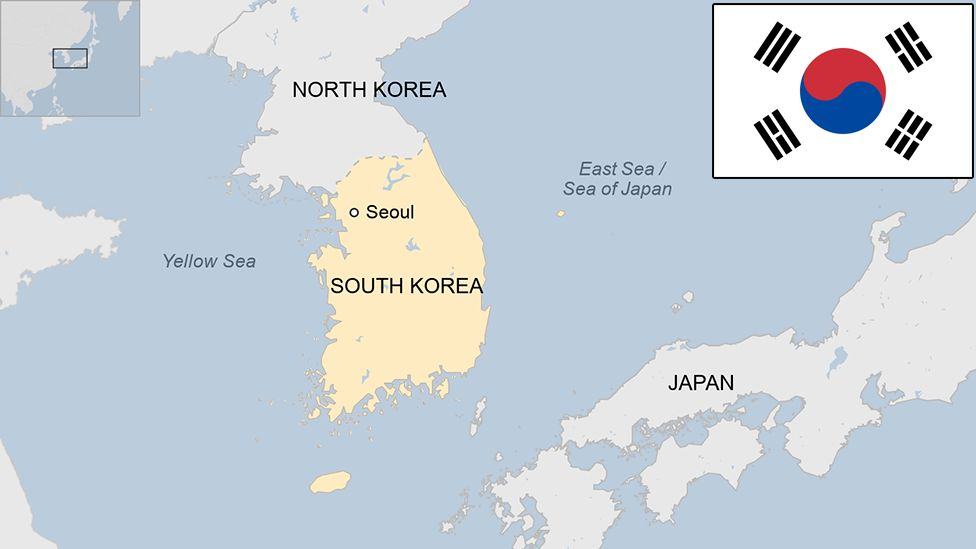

Soju is the national drink of what country?
Answer: Korea

Culture Fact #41. Soju, the national drink of Korea, is the most popular spirit in the world by volume, and sales have
only been growing in recent years. Soju is a clear spirit that contains 20 to 24% alcohol by volume (ABV). It comes from Korea
and is mainly consumed in all three countries, along with China and Japan. "Jinro" is the most well-known brand.